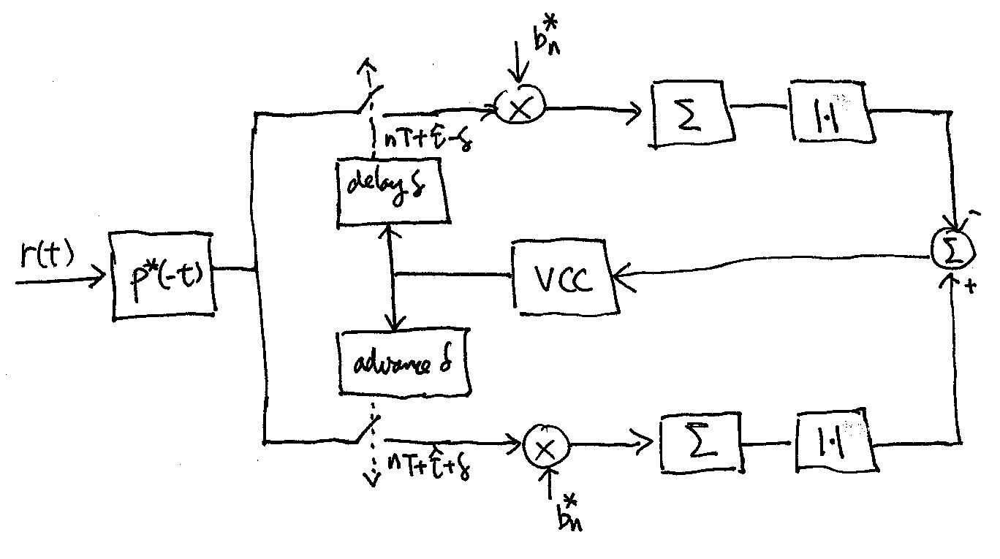
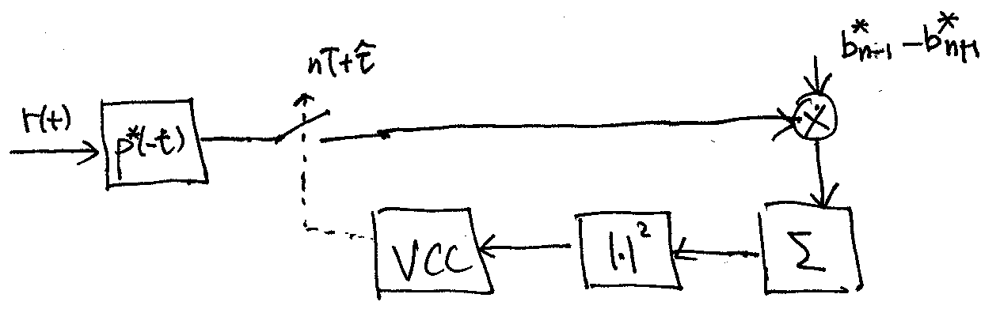
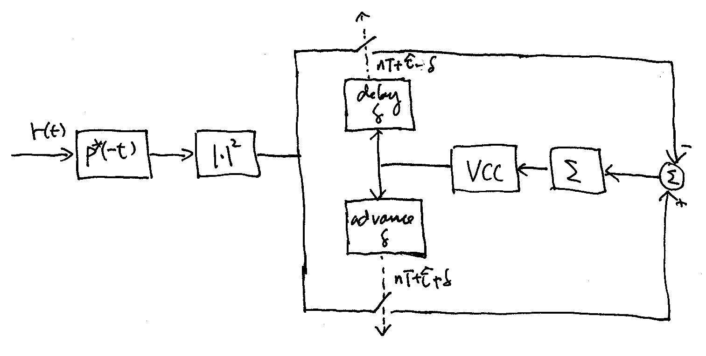

7.1. Closed-Loop Symbol Synchronization#
As mentioned before, symbol synronization is continuously performed by a class of closed-loop circuitry called delay-locked loops (DLLs). The use of DLLs can be motived by maximum likelihood (ML) estimation of the symbol timing in an AWGN channel.
7.1.1. Decision-directed DLLs#
Let \(x(t) = \sum_{n} b[n] p(t-nT)\) be a linearly modulated TX signal. Let the RX signal be
\[\begin{equation*} r(t) = x(t-\tau) e^{j\theta} + n(t) \end{equation*}\]where \(n(t)\) is AWGN, \(\tau\) models the unknown delay to be estimated and \(\theta\), which models the unknown carrier phase, is assumed to be uniformly distributed over \([-\pi,\pi]\). Note that we do not intend to estimate \(\theta\) here. Using the model above also implicitly assumes that the carrier frequency offset is negligible. Assuming coarse synchronization has been achieved, we may limit \(\tau\) to be in the range of \(\left[ -\frac{T}{2}, \frac{T}{2} \right)\) for fine symbol synchronization. First assume that the symbol sequence \(b[n]\) is known. Following an argument similar to that in [1] Ch. 5, it is not hard to obtain the following ML estimator of \(\tau\):
(7.1)#\[\begin{split}\begin{align} \hat \tau &= \arg\!\max_{\tau} \left| \int_{-\infty}^{\infty} r(t) x^*(t-\tau) dt \right| \nonumber \\ &= \arg\!\max_{\tau} \left| \sum_{n} b^*[n] \tilde r(nT+\tau) \right| \end{align}\end{split}\]where \(\tilde r(t) \triangleq r(t) * p^*(-t)\) is the output signal of the MF, matched to the TX pulse shape \(p(t)\).
A necessary condition that the ML estimator \(\hat \tau\) must satisfy is
\[\begin{equation*} \frac{d}{d\hat\tau} \left| \sum_{n} b^*[n] \tilde r(nT+\hat \tau) \right| = 0. \end{equation*}\]If we approximate the derivative by a difference, then the necessary condition equation becomes
(7.2)#\[\begin{equation} \left| \sum_{n} b^*[n] \tilde r(nT+ \hat \tau+ \delta) \right| - \left| \sum_{n} b^*[n] \tilde r(nT+\hat\tau - \delta) \right| = 0 \end{equation}\]where \(\delta\) should be chosen small enough to accurately approximate the derivative. We may use the following closed-loop circuitry to solve for \(\hat \tau\) in (7.2):
Pick \(\delta = T\). If \(\hat\tau\) satisfies
(7.3)#\[\begin{equation} \left| \sum_{n} \left(b^*[n-1] - b^*[n+1] \right) \tilde r(nT+ \hat \tau) \right|^2 = 0, \end{equation}\]then it also satisfies (7.2). Using (7.3) to solve for \(\hat \tau\), we arrive at the Mueller & Müller DLL:
In practice, we may send a known sequence of symbols at the beginning of a packet to train the DLLs above. After the end of the training sequence, data symbols are sent and the decisions made by the demodulator on the data symbols are then fed back to drive the DLLs. The resulting DLLs are called the decision-directed DLLs, which usually work well when the SNR is high so that the symbol decisions are mostly correct.
{kind=link}
{kind=link}
7.1.2. Non-decision-directed DLLs#
For simplicity, consider the BPSK symbols here (i.e. \(b[n] = \pm 1\)). When no training sequence of symbols is available, we model the symbols as i.i.d. binary random variables wiht equal probabilities. Again, this model suggests that we do not want to estimate/demodulate the symbols at this point. Further assume that the pulse shape \(p(t)\) have most of its energy concentrated to a symbol period. Then it is not hard to show that the ML estimator of \(\hat \tau\) is approximately given by
(7.4)#\[\begin{equation} \hat \tau \approx \arg\!\max_{\tau} \frac{1}{2\pi} \int_{-\pi}^{\pi} \exp \left\{ \sum_n \ln\!\cosh \left[ \sqrt{\text{SNR}} \, |\tilde r(nT+\tau)| \cos\theta \right] \right\} d\theta. \end{equation}\]For low SNR, using the approximation \(\ln\!\cosh x \approx \frac{x^2}{2}\) if \(|x| \ll 1\), we can further approximate (7.4) by
(7.5)#\[\begin{split}\begin{align} \hat \tau &\approx \arg\!\max_{\tau} \frac{1}{2\pi} \int_{-\pi}^{\pi} \exp \left\{ \frac{\text{SNR}}{2} \sum_n |\tilde r(nT+\tau)|^2 \cos^2\theta \right\} d\theta \nonumber \\ &= \arg\!\max_{\tau} \sum_n |\tilde r(nT+\tau)|^2. \end{align}\end{split}\]As before, we may solve for \(\hat \tau\), from the necessary condition,
\[\begin{equation*} \sum_n \frac{d}{d\hat\tau} |\tilde r(nT+\hat\tau)|^2 \approx \frac{1}{2\delta} \sum_n |\tilde r(nT+\hat\tau+\delta)|^2 - |\tilde r(nT+\hat\tau-\delta)|^2 = 0 \end{equation*}\]using the following closed-loop circuitry, which is usually referred to as the early-late gate DLL:
For high SNR, using instead the approximation \(\ln\!\cosh x \approx |x| - \ln 2\) if \(|x| \gg 1\) in (7.4) gives us that
\[\begin{equation*} \hat \tau \approx \arg\!\max_{\tau} \sum_n |\tilde r(nT+\tau)| \end{equation*}\]Hence, we may solve for \(\hat\tau\) from the necessary condition:
\[\begin{equation*} \sum_n \frac{d}{d\hat\tau} |\tilde r(nT+\hat\tau)| \approx \frac{1}{2\delta} \sum_n |\tilde r(nT+\hat\tau+\delta)| - |\tilde r(nT+\hat\tau-\delta)| = 0. \end{equation*}\]Thus the early-late gate DLL, with the \(|\cdot|^2\) block replaced by \(|\cdot|\), may be used to solve for \(\hat\tau\) in this case also. However, one may directly use the early-late gate DLL without any modification to approximately solve for \(\hat \tau\).
{kind=link}
7.1.3. USRP implementation#
We may implement the DLLs mentioned in the host computer. Since the TX and RX sampling rates are typically chosen close to the symbol rate in order to maximize the data rate as previously discussed in the TX pulse shape design section, one would need to implement the MF with interpolation to obtain the MF output at fine fractional symbol timing for \(\hat \tau\) and \(\delta\) above. An interpolation factor of at least 4 is often employed.
The voltage control clock (VCC) amounts to adjusting \(\hat\tau\) among the possible fractional symbol values within the ambiguity range of \(\left[ -\frac{T}{2}, \frac{T}{2} \right)\).
In general, the computational load of a DLL in the host is relatively high because the MF with a high interpolation rate is required to filter the whole packet.
In order to reduce complexity, one may first implement the MF with a low interpolation factor and then further linearly (or quadratically) interpolate the MF output samples to obtain an approximation to MF with a high interpolation factor.
For a decision-directed DLL, since there is a significant processing delay associated with the data symbol decision process, this delay has to be accounted for when feeding back the symbol decisions to drive the DLL.